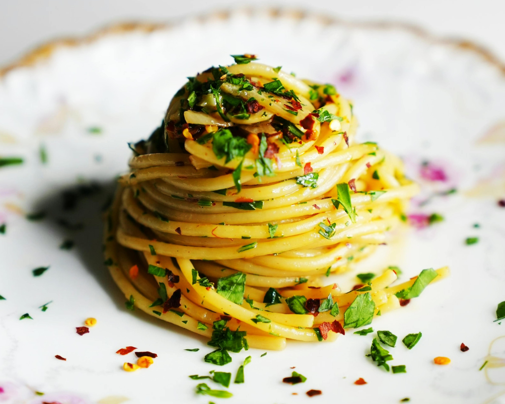

Aglio E Olio is a really simple and quick pasta dish from the city of Naples, Italy.
It's famous for using simple and readily available ingredients.
This dish originated in Southern Italy and was a quick and easy meal for lower class. Dish's name is self explanatory, Aglio meaning garlic and Olio meaning oil.

Ingredients
- Spaghetti
- Olive Oil
- Garlic
- Chilli Flakes
- Salt
- Fresh Parsley
Method of Cooking
- Cook Spaghetti in salted water till its near being Al dente.
- Add 3 to 4 tablespoons of olive oil in a different pan and heat it over medium.
- Once oil is hot, add 4 to 8 sliced or minced garlic cloves depending on how garlicky you like your food.
- Add red chilli flakes to the taste right after garlic.
- sauté till garlic is light brown/golden.
- Once garlic is the right color, add 1/2 cup or 100ml of past water and with that add your cooked spaghetti.
- Toss pasta around and cook it in the sauce until the spaghetti is finely coated in the sauce.
- if sauce is a bit dry, add more pasta water to your liking.
- add a pinc of salt and taste. If not enough, add another pinch of salt.
- Garnish it with chopped fresh parsley and it's ready to serve.